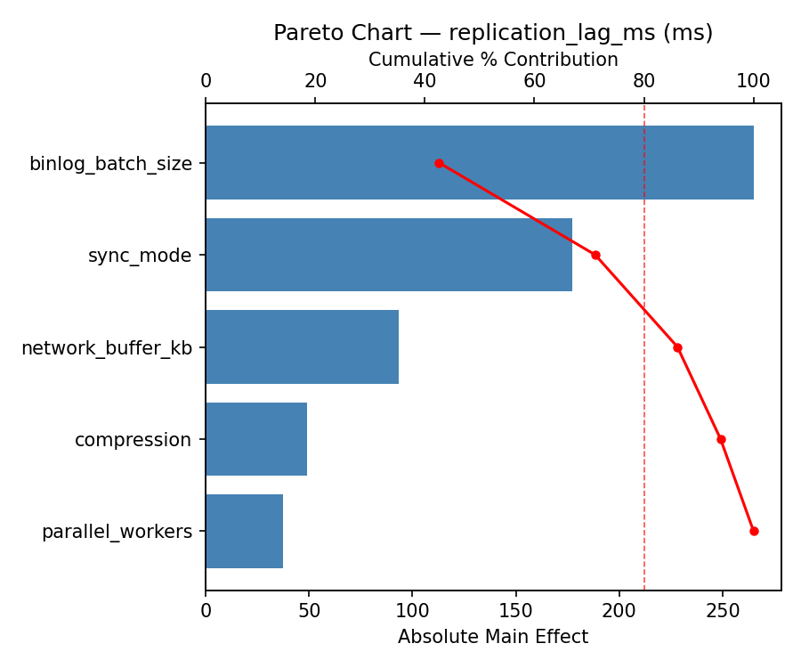
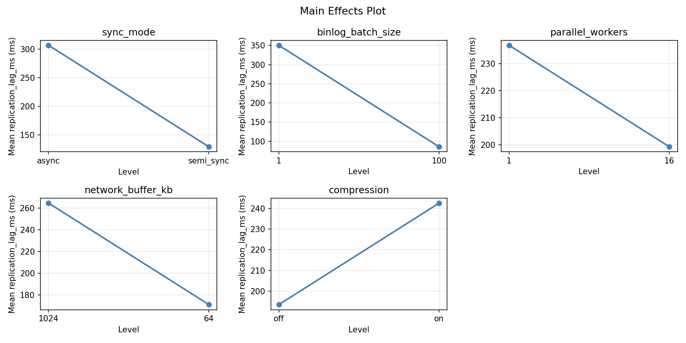
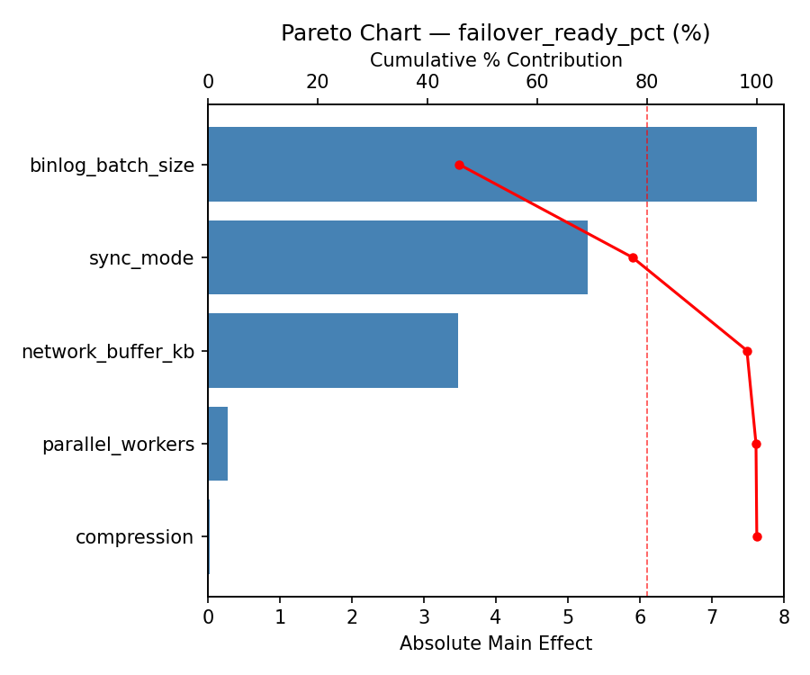
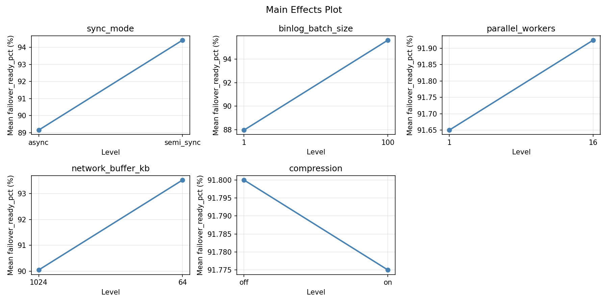
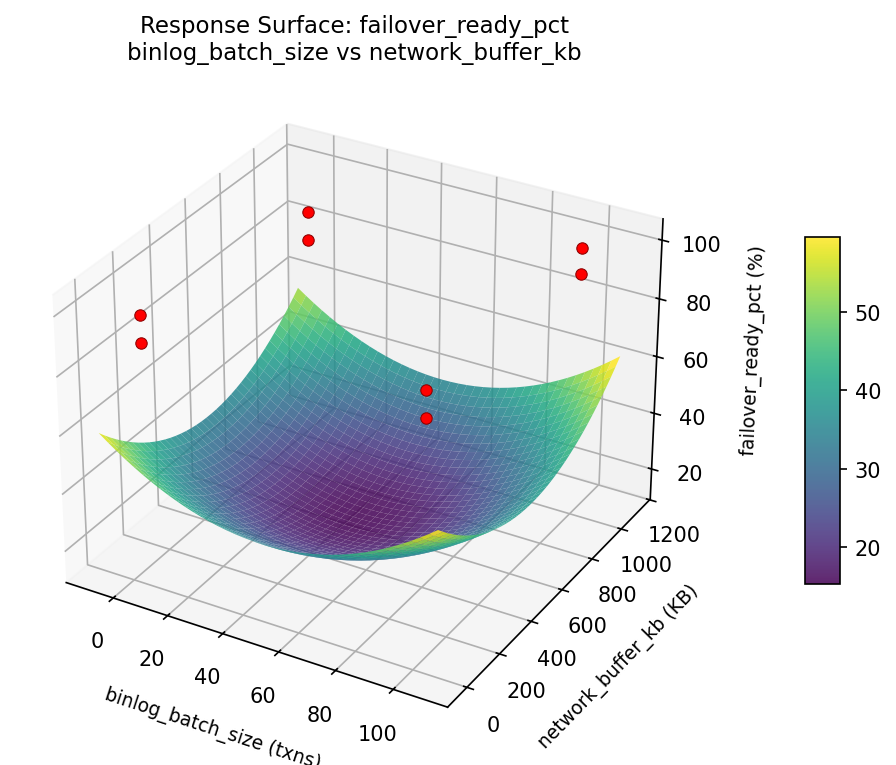
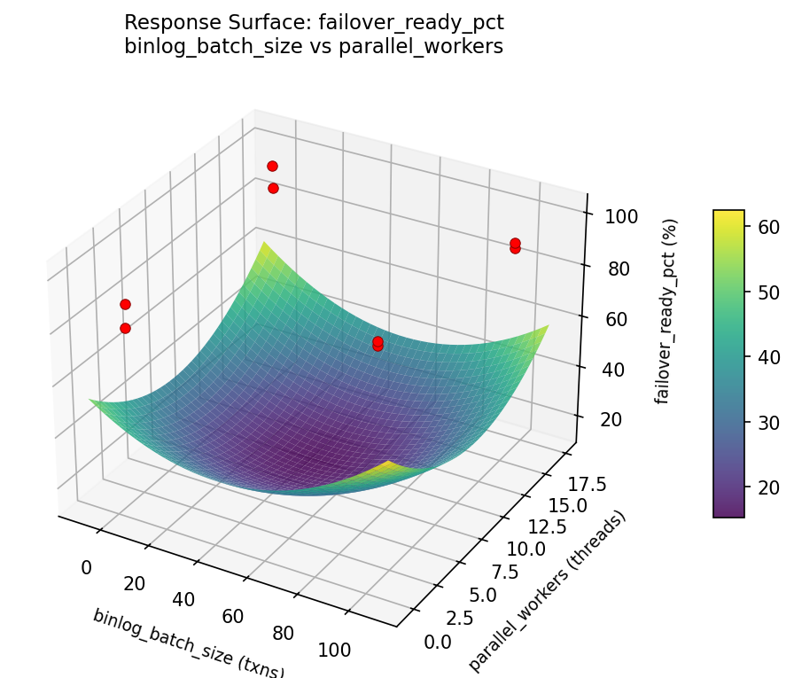
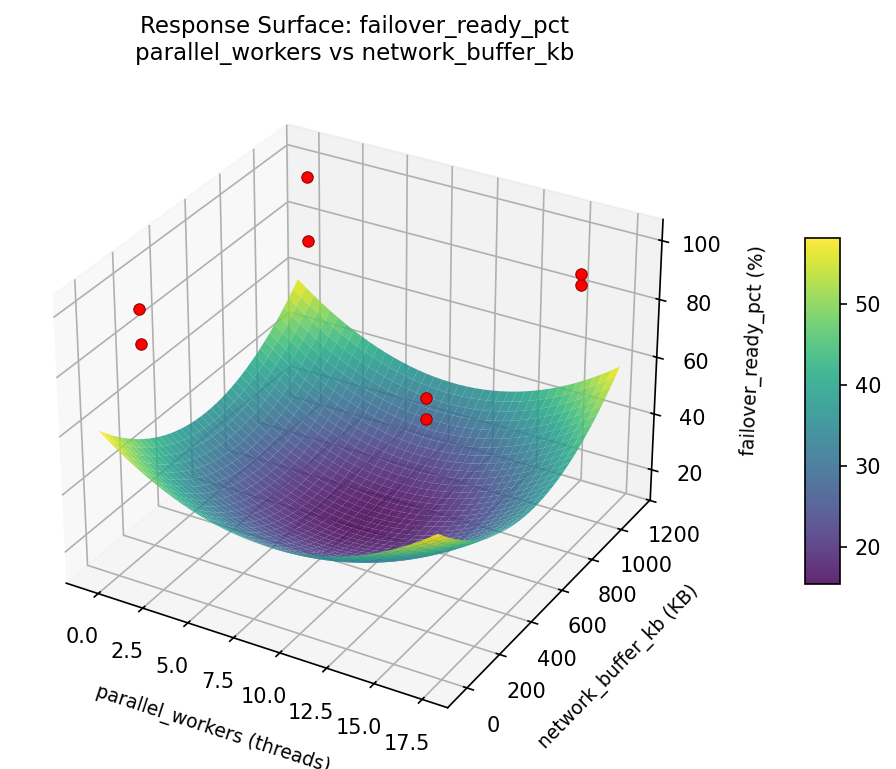
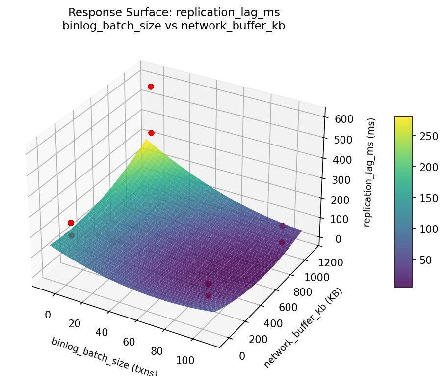
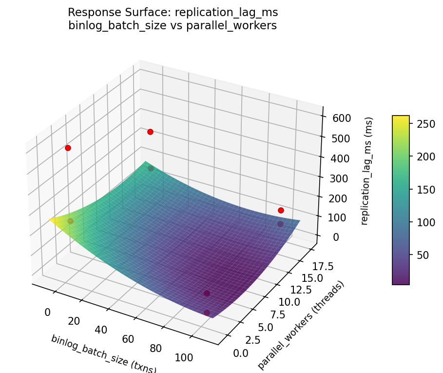
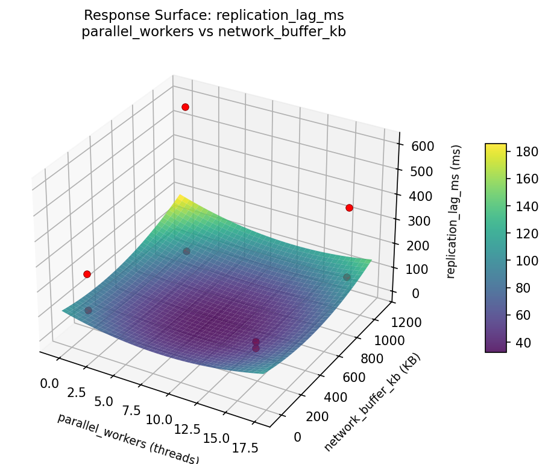

Fractional factorial of 5 replication parameters for lag and failover readiness
| Factor | Low | High | Unit |
|---|---|---|---|
sync_mode | async | semi_sync | |
binlog_batch_size | 1 | 100 | txns |
parallel_workers | 1 | 16 | threads |
network_buffer_kb | 64 | 1024 | KB |
compression | off | on |
Fixed: engine = mysql_8, gtid = on
| Response | Direction | Unit |
|---|---|---|
replication_lag_ms | ↓ minimize | ms |
failover_ready_pct | ↑ maximize | % |
The Fractional Factorial Design produces 8 runs. Each row is one experiment with specific factor settings.
| Run | sync_mode | binlog_batch_size | parallel_workers | network_buffer_kb | compression |
|---|---|---|---|---|---|
| 1 | async | 100 | 16 | 64 | off |
| 2 | semi_sync | 1 | 1 | 64 | off |
| 3 | semi_sync | 100 | 1 | 1024 | off |
| 4 | semi_sync | 100 | 16 | 1024 | on |
| 5 | async | 100 | 1 | 64 | on |
| 6 | semi_sync | 1 | 16 | 64 | on |
| 7 | async | 1 | 1 | 1024 | on |
| 8 | async | 1 | 16 | 1024 | off |
| Feature | Value |
|---|---|
| Design type | fractional_factorial |
| Factor types | continuous (3), categorical (2) |
| Arg style | double-dash |
| Responses | 2 (replication_lag_ms ↓, failover_ready_pct ↑) |
| Total runs | 8 |
Generated from actual experiment runs using the DOE Helper Tool.
Top factors: network_buffer_kb (34.5%), compression (27.2%), sync_mode (19.3%).
Pareto Chart

Main Effects Plot

Top factors: network_buffer_kb (23.0%), sync_mode (20.8%), parallel_workers (20.3%).
Pareto Chart

Main Effects Plot

3D surfaces fitted with quadratic RSM. Red dots are observed data points.
failover ready pct binlog batch size vs network buffer kb

failover ready pct binlog batch size vs parallel workers

failover ready pct parallel workers vs network buffer kb

replication lag ms binlog batch size vs network buffer kb

replication lag ms binlog batch size vs parallel workers

replication lag ms parallel workers vs network buffer kb
